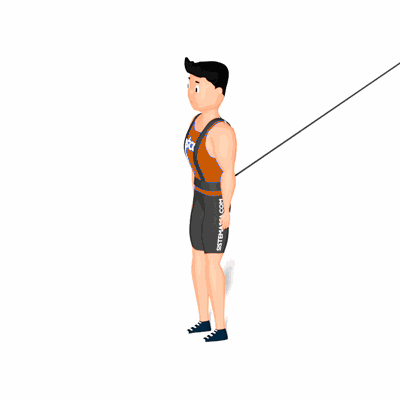

Avião com Tração Elástica

Exercício de resistência elástica para estabilidade do tronco e dos ombros, e mobilidade para a articulação do quadril.
Ficha Técnica
Tipo: Funcional
Grupo Muscular: Perna
Aparelho: Nenhum
Músculos: Nenhum
Como realizar
- Prenda o colete de tração elástica em seu tronco;
- Na posição em pé, joelhos ligeiramente flexionados;
- A coluna deverá se manter reta em toda a execução do exercício;
- Manter uma das pernas com o pé apoiado no solo, eleve a outra realizando simultaneamente a flexão do quadril inclinando o tronco para a frente e abra os braços;
- Retorne à posição inicial e repita os movimentos.
 RC STORE
RC STORE